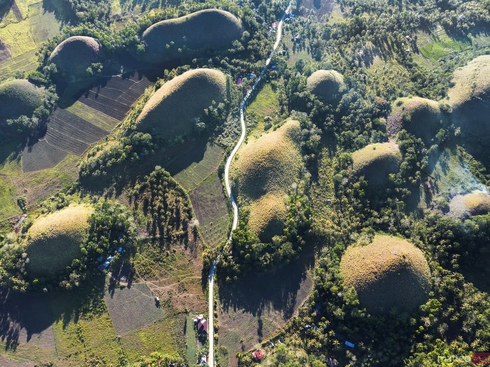
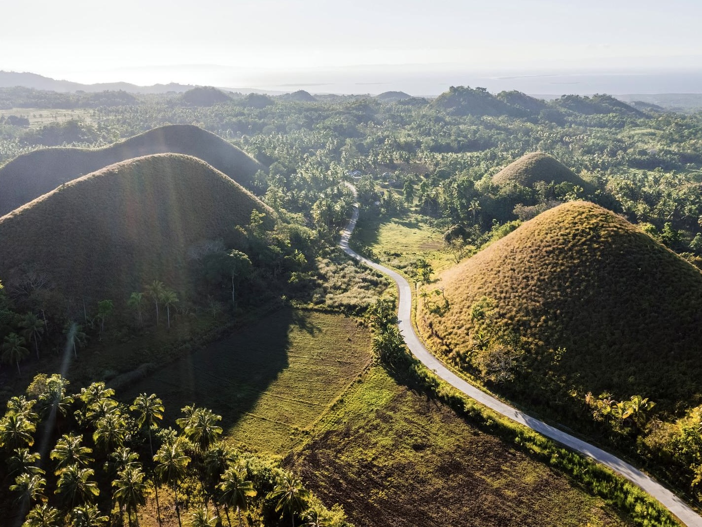
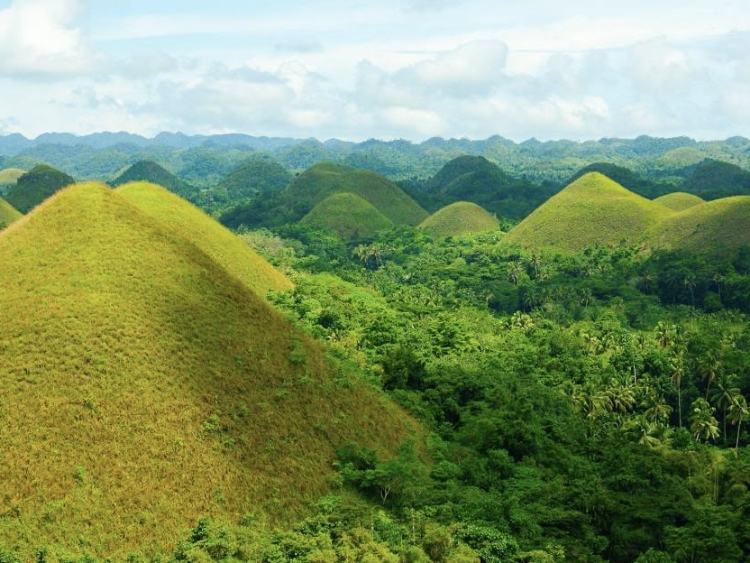
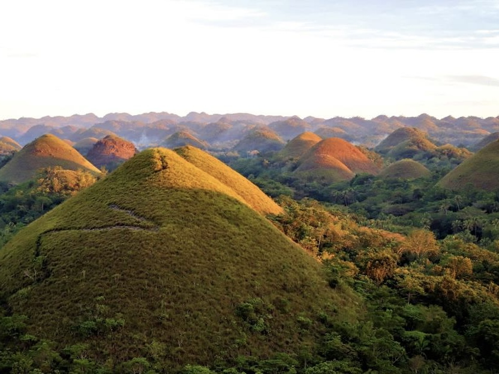
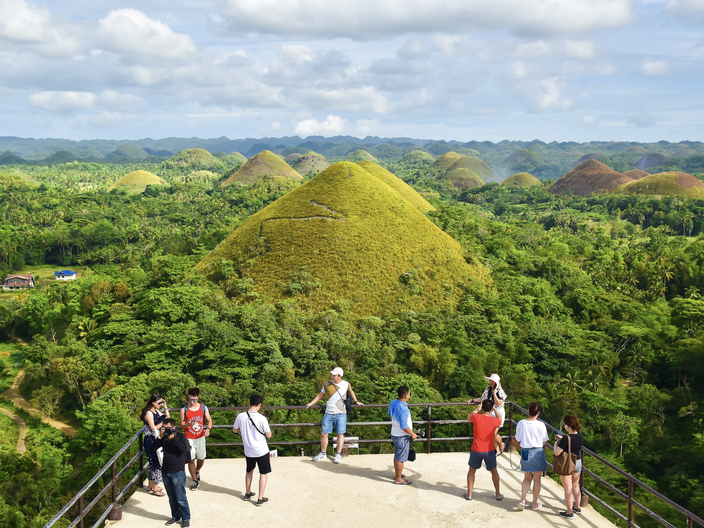
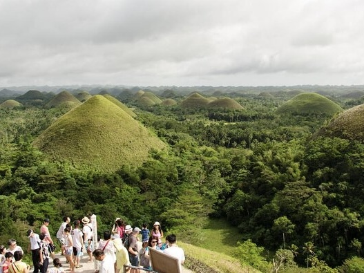
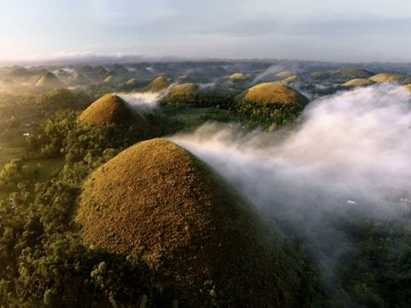
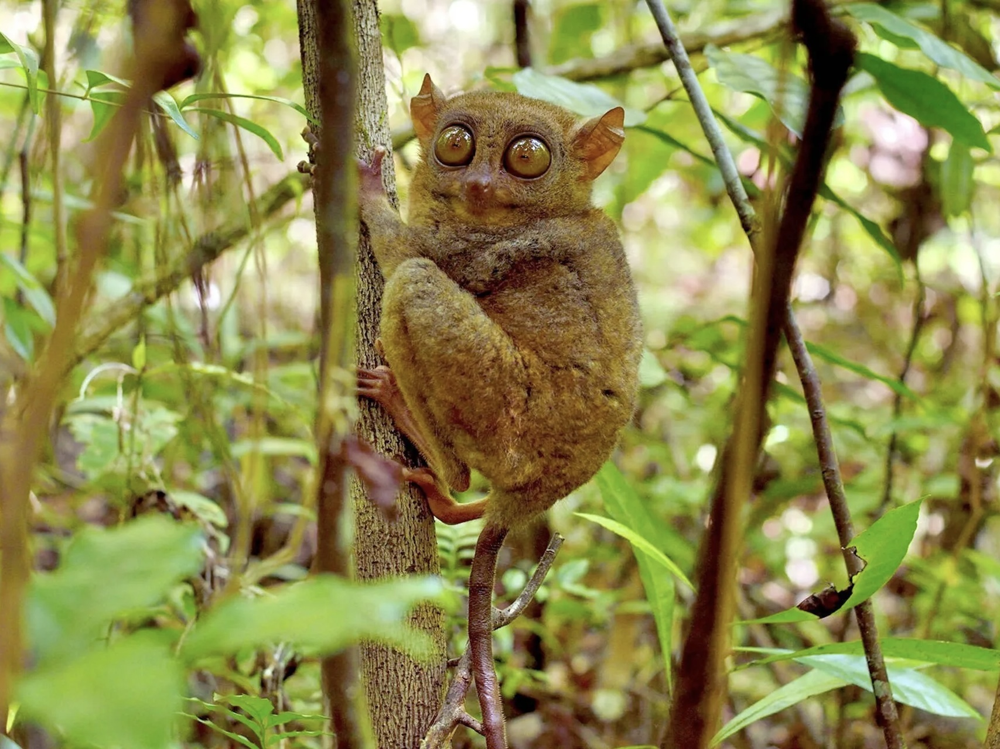

BOHOL CHOCOLATE HILLS
| Located | Famous For | Travel Hours From Manila | Activities |
|---|---|---|---|
| Carmen, Bohol, Philippines | Unique geological formations that resemble chocolate mounds, turning brown in the dry season. | About 1.5 hours by plane to Panglao Island, then a short drive to the hills. | Sightseeing, hiking, and visiting nearby attractions like the Tarsier Sanctuary. |








| Travel Tips |
|---|
|
Best Time to Visit The best time to visit Bohol is from November to April during the dry season. This is when you can fully enjoy the outdoor activities and natural attractions. |
|
How to Get There Fly to Bohol-Panglao International Airport from Manila or Cebu. Alternatively, you can take a ferry from Cebu to Tagbilaran City, the capital of Bohol. |
|
Where to Stay Panglao Island is a popular choice for tourists, with many resorts and accommodations available. Staying here provides easy access to the beaches and diving spots. |
|
Pack Light, Pack Smart Bring swimwear, lightweight clothing, and reef-safe sunscreen. If you plan to visit the Chocolate Hills or go island hopping, consider packing a waterproof bag. |